Emporia User Guide
Emporia is a marketplace for commodities. It has two kinds of markets:
- Order book markets (continuous or auction): you enter buy and sell orders, and the system matches them automatically by price and time.
- Bulletin markets (shown in teal): you post a bulletin saying what you would like to buy or sell. Another firm makes an offer on it, and you accept or reject the offer. Nothing is matched automatically.
All orders, trades and positions belong to your firm, so every user of the firm sees them. Other firms never see who you are; prices and volumes in the market are anonymous.
Getting started
Open the Emporia address in your browser and sign in with your firm, username and password. You get them from your Emporia administrator. The version of the system is shown below the form.
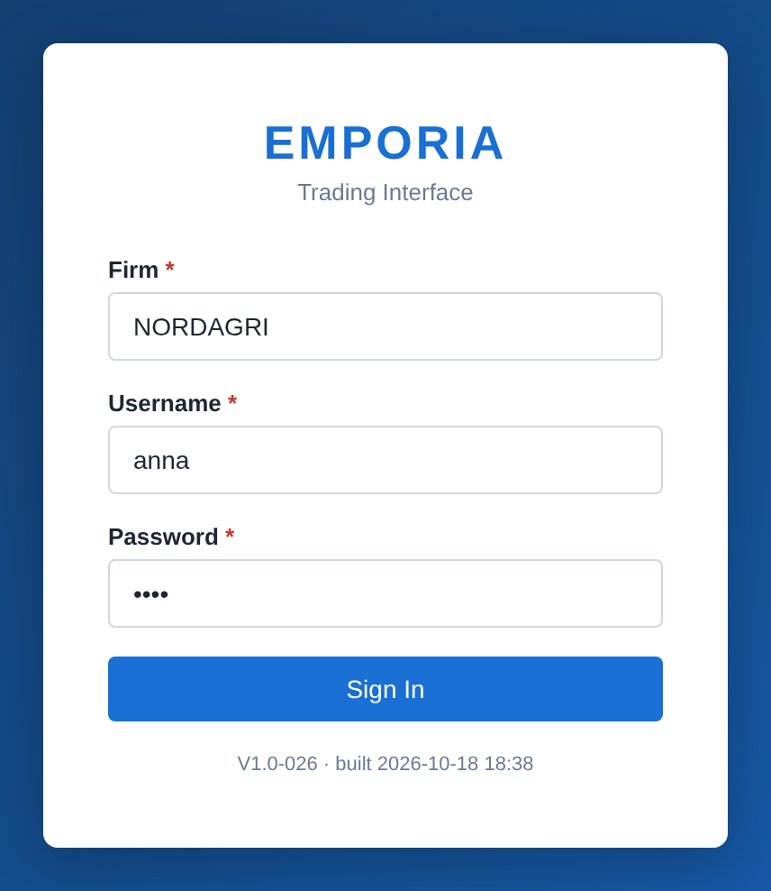
After signing in you see the trading screen. To end your session, click Logout in the top right corner. If you are idle for a while, the session ends by itself and you have to sign in again.
The screen
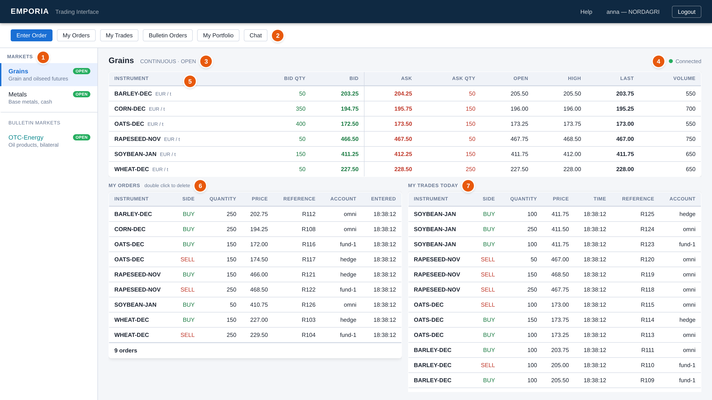
- 1Markets. The markets your firm may trade in, each with its state (OPEN, PREOPEN, CLOSED or SUSPENDED, see Market states). The bulletin markets are listed under their own heading. Click a market to show it.
- 2Top menu. Enter Order opens the order dialog for the selected market. The other buttons open views that cover all markets: My Orders, My Trades, Bulletin Orders, My Portfolio and Chat. The button of the view you are in is highlighted.
- 3The selected market, its type and its state.
- 4Connection. Green Connected means you receive live prices and events. See Connection and session.
- 5Price table. One row per instrument, updated live, see Prices and the order book.
- 6My Orders. Your firm's resting orders in this market.
- 7My Trades Today. Your firm's trades in this market today, newest first.
Prices and the order book
The price table shows for each instrument:
| Column | Meaning |
|---|---|
| Bid Qty / Bid | The best (highest) buy price and the total quantity at that price. |
| Ask / Ask Qty | The best (lowest) sell price and the total quantity at that price. |
| Open, High, Last | Today's first, highest and latest trade price. |
| Volume | The quantity traded today. |
An instrument's currency and unit, if the market has given them, are shown after its name, e.g. EUR / t: prices in euro per tonne, quantities in tonnes.
A value that changes flashes green when it went up and red when it went down. A dash (—) means there is no value, for example no buy orders.
What you can do in the table:
- Click a row to see the instrument's whole order book.
- Double click the bid to sell at the best bid, or the ask to buy at the best ask. This opens the order dialog filled in with that price and quantity (see Entering an order).
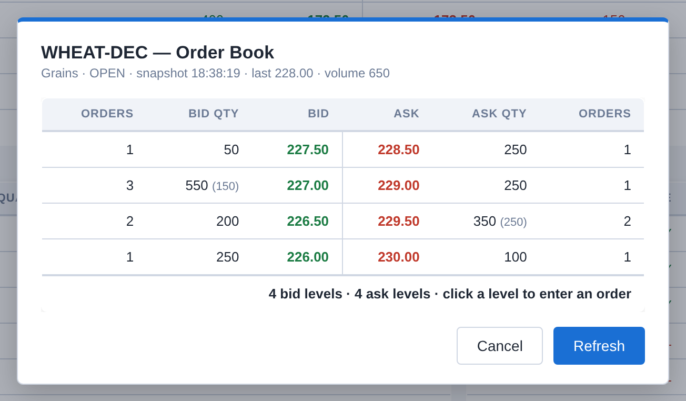
The order book shows each price level with the number of orders and the total quantity. Your firm's own quantity at a level is shown in brackets, e.g. 550 (150). The book is a snapshot: click Refresh to update it. Click a level to enter an order against the best price on that side.
Entering an order
Select a market and click Enter Order in the top menu, or double click a price in the price table to get the dialog filled in.
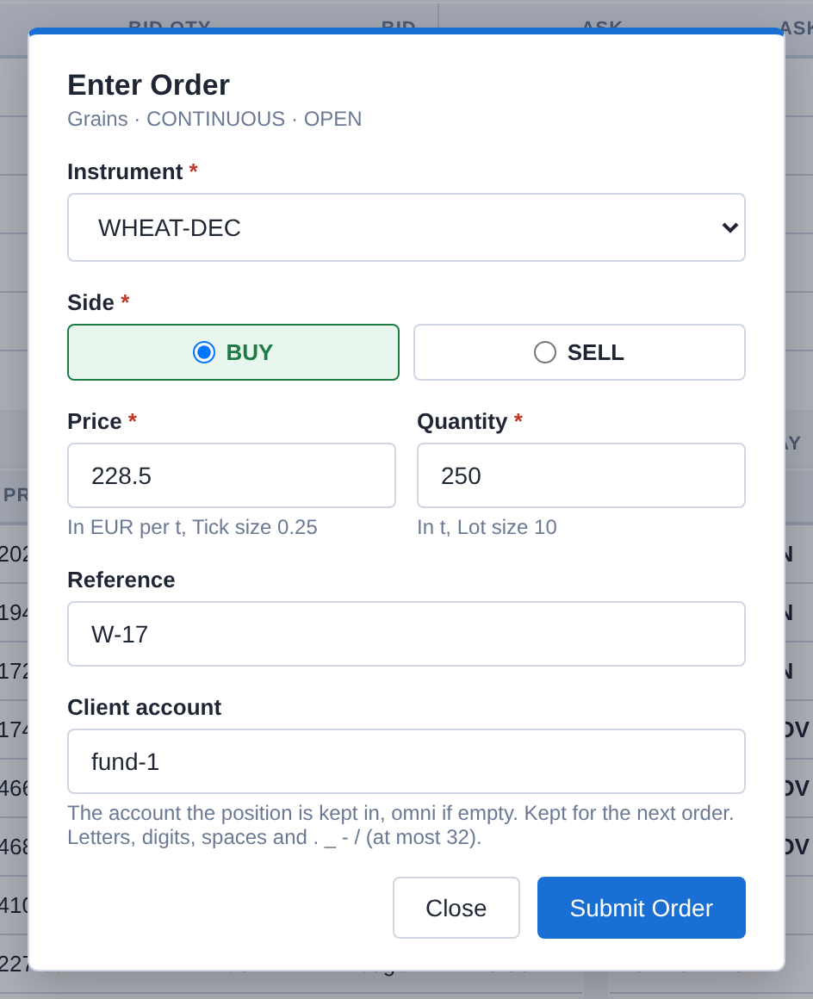
| Field | Meaning |
|---|---|
| Instrument | What you buy or sell. |
| Side | BUY or SELL. |
| Price | Your limit price, per unit of the quantity. It must be a multiple of the instrument's tick size, shown below the field with its currency, if it has one. A buy order trades at this price or lower, a sell order at this price or higher. |
| Quantity | A multiple of the instrument's lot size, shown below the field with its unit, if it has one. |
| Reference | Optional, your own text. It is shown with the order and its trades. |
| Client account | Optional, the account the trades are booked in, see Client accounts. The dialog remembers the last one you used. |
Click Submit Order. A short popup confirms the order and the dialog closes. If something is wrong, the dialog shows the reason and stays open.
The order trades at once with orders on the other side at your price or better. The trade is at the resting order's price. Whatever is not traded stays in the book as a resting order and is shown under My Orders. Orders can only be entered while the market is OPEN or PREOPEN.
Some markets don't allow self-trade: your firm's orders never trade with each other there. If your order would trade with a resting order of your own firm (yours or a colleague's), it trades with the other firms' better orders first, and the rest of it is cancelled instead of trading or resting; the popup says how much. Your firm's resting order stays as it was.
Deleting an order
Double click an order in My Orders (in the market or in the My Orders view) and confirm with Delete Order. Any user of your firm can delete the firm's orders.
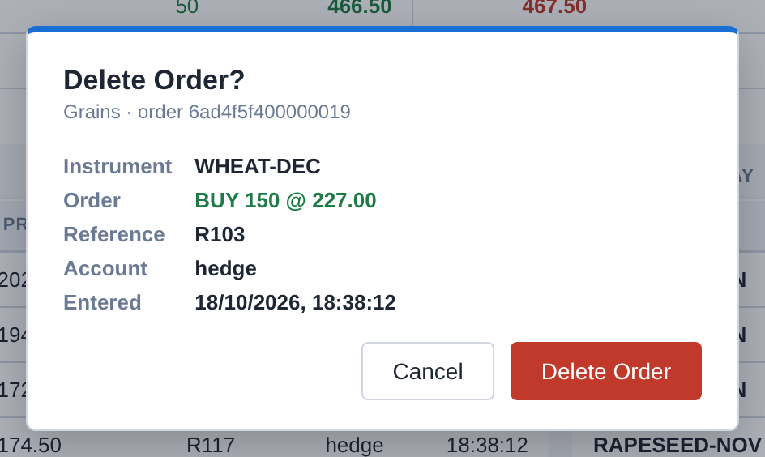
Trades and popups
When one of your firm's orders trades, a popup appears in the top right corner. It shows what was bought or sold, the market, the time and the client account. The trade is added to My Trades and to the portfolio at once.
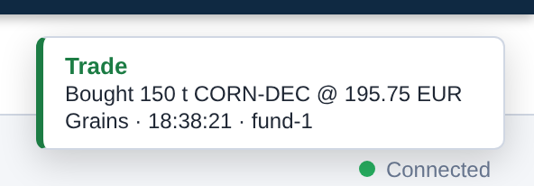
Popups close by themselves after a few seconds, or when you click them. At most three are shown at a time. Popups for new bulletin offers stay until the offer is answered or expires, see Answering an offer.
The market supervision can reverse a trade, for example one made by mistake. You then get a popup Trade reversal: a new trade at the same price and quantity in the opposite direction, so your position is back where it was. In My Trades its Order Id column says reversal of and the number of the reversed trade. A reversal doesn't change the market's prices. Bulletin trades can be reversed the same way (popup Bulletin trade reversal). Your firm's orders and bulletins can also be deleted by the market supervision; they then disappear from My Orders and the bulletin lists.
My Orders
The My Orders view lists the resting orders of all users in your firm, in all markets or in the market you choose in its list. Double click an order to delete it.
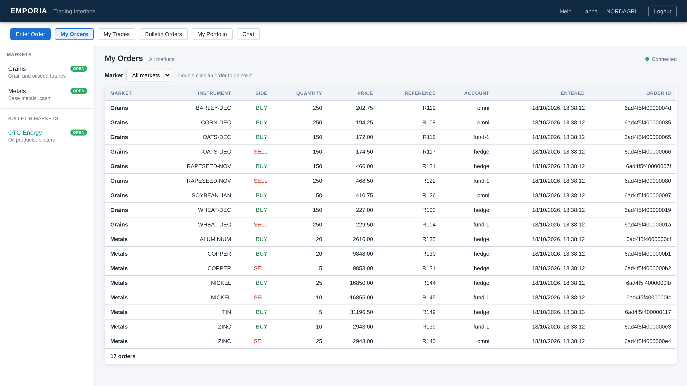
My Trades
The My Trades view lists your firm's trades in all markets for one day, today by default. Enter
another date (yyyy-MM-dd) and click Show, or step a day back or forward with the
arrows. Today goes back to today. Bulletin trades are listed too, with their market in teal.
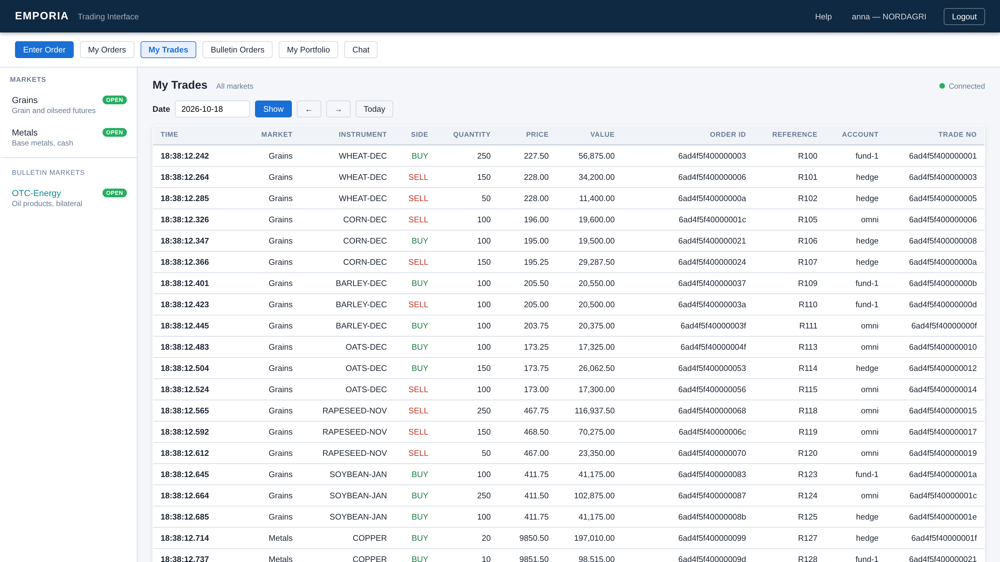
My Portfolio
The My Portfolio view shows your firm's position in each instrument. It is computed from all trades of every day: bought minus sold. Each position is valued at the latest trade price (Last Price), in the instrument's currency, and the total value of all positions is shown at the bottom, per currency when the instruments have different currencies. Positions from bulletin trades are shown per bulletin market and instrument, in teal.
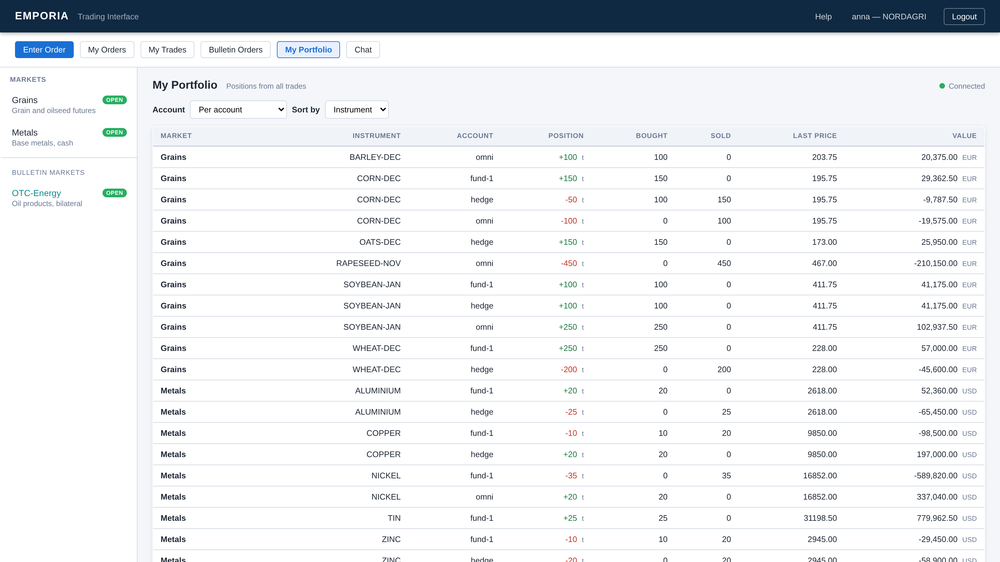
The Account list chooses how the positions are shown:
- Per account: one row per instrument and client account. Sort by orders the rows by instrument or by account.
- Total per instrument: the accounts added up, one row per instrument.
- One account: only that account's positions.
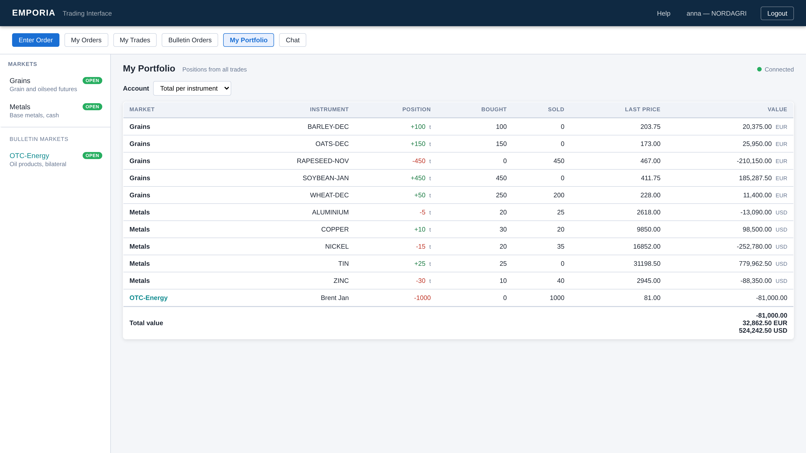
Client accounts
A client account tells which client, fund or book an order or bulletin is for. It is your firm's own
text, e.g. fund-1 or hedge: up to 32 letters, digits, spaces and
. _ - /. Upper and lower case are different. If you leave it empty, the account is
omni.
Each trade is booked in the account of your order, bulletin or offer. The portfolio can therefore show a position per account. A trade between two of your own accounts moves the position from one account to the other. Client accounts are private to your firm: other firms never see them.
Bulletins
Select a bulletin market (under Bulletin Markets in the market list) to see its bulletins. A bulletin says what a firm wants to do. It may leave out the side, the price or the quantity:
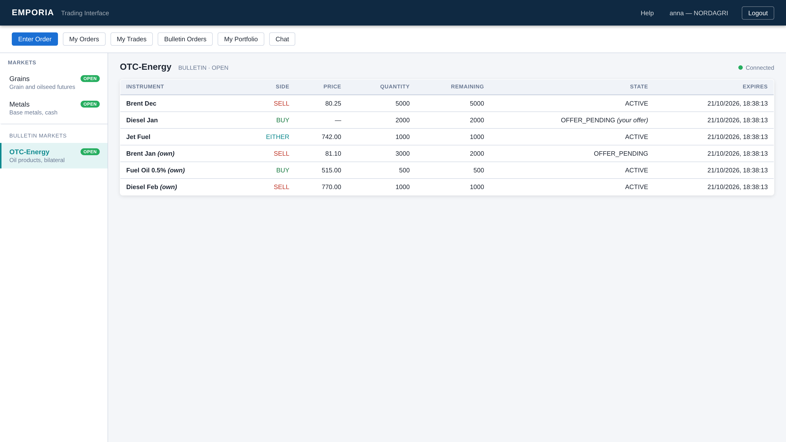
- Side BUY or SELL is the bulletin owner's side. EITHER means the owner will buy or sell, and the firm making the offer chooses.
- Remaining is the quantity left after earlier trades on the bulletin.
- State: ACTIVE (open for offers) or OFFER_PENDING (an offer is waiting for the owner's answer; only one offer at a time).
- Expires: a bulletin is removed automatically after the market's maximum time.
- (own) marks your firm's bulletins (click one to withdraw it), and (your offer) a bulletin where your firm's offer is waiting.
The other firms never see who posted a bulletin or made an offer.
Entering a bulletin
With a bulletin market selected, click Enter Order. The dialog becomes Enter Bulletin:
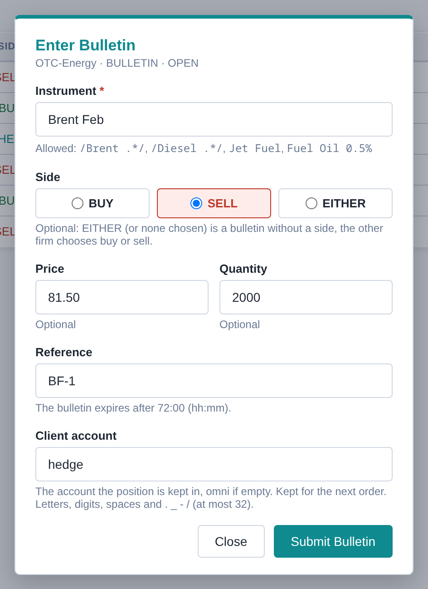
- Instrument is free text. It must be one of the names the market allows, which are listed below
the field. An entry between slashes, like
/Brent .*/, is a pattern: here any text starting with "Brent ". - Side, price and quantity are optional.
- Reference and Client account work as for orders.
Bulletins can only be entered while the market is OPEN. A bulletin stays until it is fully traded, expires or is withdrawn.
Withdrawing a bulletin
Click Withdraw next to the bulletin in Bulletin Orders, or click your own bulletin in its bulletin market, and confirm with Withdraw Bulletin. Any user of your firm can withdraw the firm's bulletins, in any market state. While an offer on the bulletin is waiting, it can't be withdrawn: accept or reject the offer first.
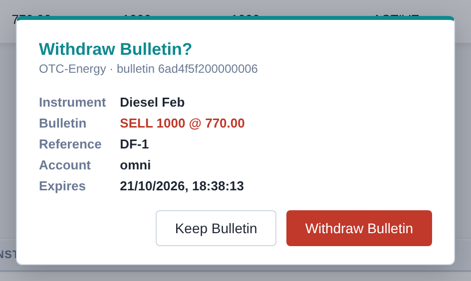
Making an offer
Click another firm's bulletin to make an offer on it.
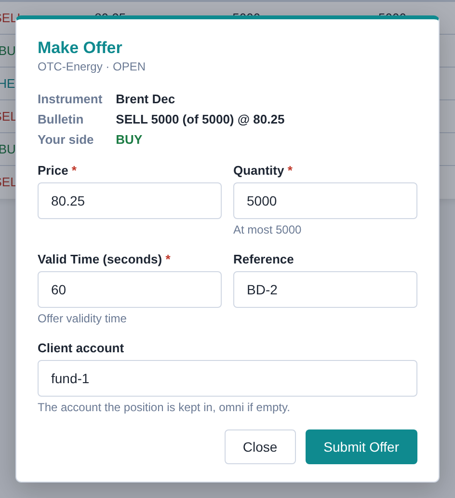
- Your side is the opposite of the bulletin's. On an EITHER bulletin you choose BUY or SELL.
- Price and quantity are filled in from the bulletin when it has them. You can change them, but the quantity can be at most the remaining quantity.
- Valid Time is how long, in seconds, the owner has to answer. If they don't, the offer expires.
The bulletin then shows (your offer). Click it again to withdraw your offer. When the owner answers, you get a popup: a trade if the offer was accepted, otherwise Offer rejected or Offer expired.
Answering an offer
When another firm makes an offer on one of your firm's bulletins, every user of your firm gets a popup in any view. It counts down the time left to answer. If the browser allows it, a desktop notification is shown as well. (The browser asks for permission the first time you click on the page.)
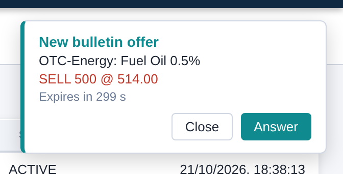
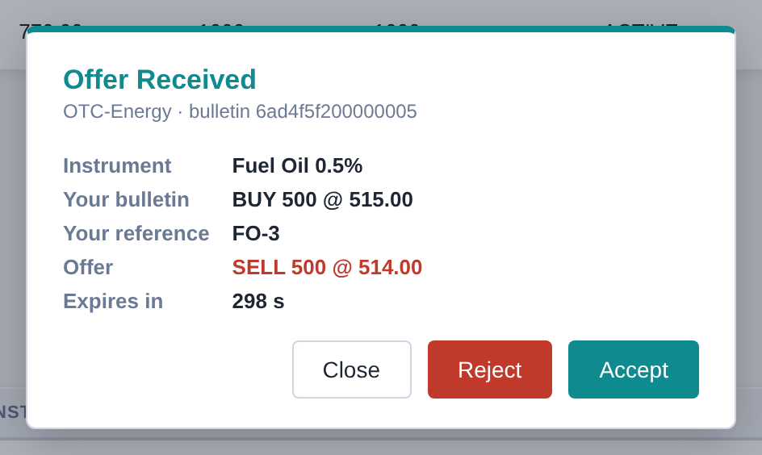
Click Answer to open the offer, then Accept or Reject. When you accept, the trade is made at the offer's price and quantity, and both firms get a trade popup. The bulletin stays with its remaining quantity, or is removed when nothing is left.
Bulletin Orders
The Bulletin Orders view collects your firm's bulletin work across all bulletin markets:
- Top: your firm's bulletins, each with a Withdraw button (greyed out while an offer is waiting).
- Bottom: the offers received on them, with a countdown. Click an offer to accept or reject it.
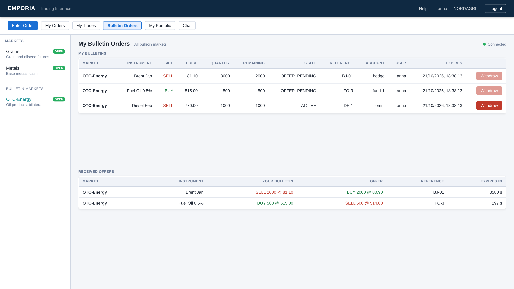
Chat
The Chat view is a message board shared by the users of all firms. Each message shows its time, the sender and the sender's firm, and an optional tag. Your own messages are highlighted.
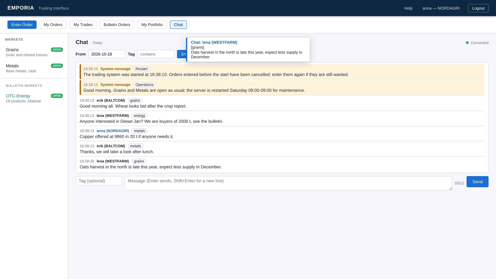
- Reading: the view shows the messages from the date in From up to now, today by default. Choose an earlier date to see older messages. Type in Tag to show only messages whose tag contains that text, then click Show.
- Writing: type the message at the bottom, optionally with a tag, and press Enter or click Send. Shift+Enter starts a new line. A message can be up to 512 characters (fewer if you use special characters), and a tag up to 64.
- New messages: a message from someone else shows a popup in the middle of the screen in every view. The popup stays a bit longer than the other popups.
- System messages come from the market operator, e.g. about opening hours, a trading halt or maintenance. They have a light orange background, here and in their popup, and say System message instead of a sender. The latest 10 are always in the list, also those older than the date in From, so you see the operator's recent announcements when you sign in. When the trading system is started, it sends one itself (tag Restart): the orders entered before the start are gone and must be entered again if they are still wanted.
Market states
| State | Meaning |
|---|---|
| OPEN | Trading. Orders are matched at once. |
| PREOPEN | Orders can be entered and deleted, but nothing is matched. When the market opens, the orders that cross are traded at one common price, and then normal trading starts. |
| CLOSED | No trading. Orders can't be entered or deleted. |
| SUSPENDED | Trading is stopped by the operator. Orders can be deleted but not entered. |
The markets open and close by themselves at their trading hours on weekdays. In an auction market, orders are collected and traded at set times instead of continuously. A bulletin market is either OPEN, CLOSED or SUSPENDED. Offers can only be made and accepted while it is OPEN, but rejecting and withdrawing are always possible.
Connection and session
Prices, popups and view updates come over a live connection, shown next to the market name. If it is lost, it shows Disconnected and the page reconnects by itself. After reconnecting it reloads the view and shows any offers received meanwhile. If the page cannot reconnect because your session has ended, sign in again.
Your session ends when you log out, or after a period without activity. Logging out in one tab ends the session in all tabs of that browser.